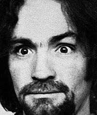

Нуэль Эммонс • Чарльз Мэнсон: подлинная история жизни, рассказанная им самим • Перевод: Татьяна Давыдова • жzл • 03.04.2006
В конце июля и в августе 1969 года произошли восемь весьма загадочных убийств. Они были совершены со зверской жестокостью, только вот дикие звери не пользуются ножами и пистолетами, а после убийства не оставляют посланий, неровно выведенных кровью жертв. Среди убитых были, в том числе, беременная Шэрон Тейт-Полански и ее друзья. Через короткое время полиция арестовала нескольких человек, оказавшихся связанными тесными узами «семьи», которую возглавлял Чарльз Мэнсон. Все они были осуждены на смертную казнь, которую впоследствии заменили пожизненным заключением. Обстоятельства происшедшего были раздуты СМИ в грандиозный скандал, что, во многом, и сделало Мэнсона всемирно известной культовой фигурой: если «фрукт — это яблоко», то «жестокий убийца — это Мэнсон».
Нуэль Эммонс познакомился с Чарльзом Мэнсоном задолго до этих событий, угодив в тюрьму за автомобильную кражу, но первоначальное их знакомство было недолгим. Второй раз их пути пересеклись в 1960 году, когда Эммонс вновь оказался в тюремной камере. После этих перипетий Эммонс стал заниматься фотожурналистикой и сотрудничать с несколькими американскими и европейскими журналами. В 1979 году он вышел на Мэнсона, отбывающего пожизненное заключение, и стал брать у него интервью. Продолжительные беседы Эммонса с Чарльзом Мэнсоном и стали этой книгой.
Сообщение о публикации сопровождалось вот таким текстом: «Дружественное “Ультре” издательство “ИЧП Клепиков” выпустило в свет новую книгу “Чарльз Мэнсон : подлинная история жизни, рассказанная им самим”. Автор - Нуэль Эммонс». И это была чистая правда — так книга и вышла. Потому что когда издательство попыталось найти кого-нибудь, от кого можно было получить лицензию на издание русского перевод, оказалось, что американское издательство, напечатавшее книгу, правами уже не располагает, сам автор скончался, а о существовании его наследников ничего не известно.
ПРЕССА И КОНТЕКСТ
Нуэль Эммонс. Чарльз Мэнсон: Подлинная история жизни, рассказанная им самим (Сетевой портал NORK, 02.06.2006)

Нуэль Эммонс познакомился с Чарльзом Мэнсоном в 1956 в тюрьме Терминал-Айленд, в 1958 уже на свободе он выручил его в одном дельце, и вновь судьба свела их в 1960, опять в тюрьме – Макнил на этот раз. Эммонс, как следует из представленных им фактов о себе, не принадлежал разряду “отпетых уголовников”, просто вписывался в сомнительные мероприятия и залетал. У таких неудачливых преступников, как правило, два пути: продолжать старое и, втягиваясь в одно безрассудство за другим, всё меньше оставаться на свободе, или наконец-то “взяться за ум”. Эммонс избрал второе: “Освободившись в 1964 году, я хотел лишь одного – стать ответственным и честным гражданином” (стр. 11). В числе занятий, посредством которых он пытался стать полноценным членом общества, было и писательство, но пробиться на этом поприще не так уж и просто, поэтому, когда в 1979, через десять лет после операции “Хельтер-Скельтер”, судьба предоставила Эммонсу шанс снова сойтись с Мэнсоном, он не стал его упускать, хотя это и стоило ему многих сил и нервов. Через шесть лет общения с Чарльзом в комнате свиданий появилась эта книга.
Эммонс, конечно, лукавит, когда говорит, что при создании “Подлинной истории” им двигало желание послужить обществу и отвадить романтически настроенную молодёжь от преступной колеи, равно как и стремление помочь Чарльзу рассказать правду о себе: терпеливо сносить в течение нескольких лет причуды и дикости Мэнсона его заставляло то же, что в своё время побудило взяться за перо Винсента Буглиози и некоторых бывших членов Семьи – слава и деньги, которые гарантированы в жадном до сенсаций обществе тем, кто пишет о Семье и её лидере. Нет, конечно, оказать поддержку и помощь Чарльзу он всё-таки хотел, может быть, даже очень, но это всё-таки не было главным. Как-никак, Эммонс сам вышел из уголовной среды, а там благородства в принципе не может быть, хотя и говорят о нём очень много.
Впрочем, не будем умалять заслуг автора. Он лишь раз обмолвился о феноменальной манере Мэнсона изъясняться: “Пару предложений он говорил связно, практически логично, но потом вдруг перескакивал на другое, не закончив первой мысли” (стр. 15), – но тот, кто хоть раз имел дело с оригиналом образца речи Чарльза, поймёт, что Эммонс проделал по истине титаническую работу, чтобы создать эту книгу, выглядящую полноценной и, что гораздо главнее, легко читаемую. Были у него и трудности иного рода: “Мэнсон временами противоречил самому себе или вдруг решал, что он не хочет делиться какой-то частью своей жизни с толпами неизвестных ему читателей” (стр. 18), – но это, по большому счёту, трудности любого биографа, ведь у каждого человека и тем более знаменитости найдётся в жизни то, что ему не захочется выносить нá люди. Да и противоречия можно обнаружить в рассказах кого угодно.
В общем и целом, автобиография Мэнсона, отредактированная и донесённая до читателя Нуэлем Эммонсом, не противоречит распространённой версии “дела Тейт-Лабианка”, сформировавшейся на основе той же книги Буглиози. Если только Семьи как сектантско-криминальной организации не было и в помине, даже названия такого не было – была лишь почти заурядная хипповская община, весьма характерная для тех времён. Не считая, конечно, мэнсоновской харизмы – а в том, что она у него была, сомневаться не стоит. Правда Сына Человеческого (но в книге он так ни разу не называется) и общественное мнение расходятся не по фактам, но по тому, какая в этих фактах обнаруживается суть, какое они имеют происхождение и толкование. Медиа во все времена подавала Чарльза как некое исчадие ада, а его жизнь как путь порока, насилия и безумия – всё это, конечно, не так, но от этого картина его судьбы не становится менее – прямо так и скажем – инфернальной. Подлинная история Чарльза Мэнсона не отменяет ада в его душе. Как не отменяет и сути современного общества, которое есть запрограммированная геенна-клоака.
Со своих слов Мэнсон получается не криминальным или каким-то религиозным деструктивным деятелем, а всего лишь “жертвой обстоятельств” (о слове “жертва” мы ещё поговорим), в которые его бросает общество. Его жизнь – череда накладывавшихся друг на друга случаев и событий, каждое из которых всё прочнее привязывало его к той роли, которую ему выделили в пьесе под названием жизнь, и которую он в итоге принялся сам исполнять: “Если на человека всё время что-то навешивают, то вскоре он перестаёт сопротивляться и становится тем, каким его изображают, обвиняя во всех смертных грехах” (стр. 55); “…Чем больше я читал и слышал о себе, тем сильнее на меня это действовало – прошло совсем немного времени, и я наполовину поверил в распространяемую про меня чушь” (стр. 258).
События же, своей цепью сделавшие из Чарльза Мэнсона “того самого Чарльза Мэнсона”, банальны. У обычного человека они встречаются сплошь и рядом. В основном это предательство. Предательство со стороны тех, кому Чарльз верил и кого любил. В первую очередь это мать. А жена сделала процесс отчуждения Чарльза нормой: “Я точно знаю одно: пока жена не бросила меня, я был исполнен желания начать законопослушную жизнь ради нашего будущего. Знаю я и то, что разочарование, охватившее меня, после того, как я осознал, что потерял жену навсегда, стало поворотной точкой в моей жизни” (стр. 63). Всё, в принципе, можно стойко пережить (никто, однако, и не говорит, что Чарльз “сломался”), но в случае Мэнсона обрушивавшиеся на него подлости попадали на благодатную почву – ведь с самого раннего детства ему доставалось по полной программе. Кроме шуток, рассказ о детских годах Чарли частенько напоминает эдакого обрутализированного “Оливера Твиста”. Аж слёзы на глазах наворачиваются.
Конечно, в своей истории Мэнсон постоянно жалуется – и подают его не так, и понимают его не так. “Не я всё это начал и уж тем более не давал установки на это” (стр. 151), – лейтмотив рассказанной им истории. Впрочем, он всё-таки признаёт, что особенности его характера и не позволили ему уклониться от уготованной роли: “Должен признать, что стремлением самоутвердиться я грешил больше остальных. Я хотел во что бы то ни стало выделиться «в общей толпе»” (стр. 53); “Несмотря на все свои рассуждения о необходимости избавиться от эго, похоже, я не мог жить в соответствии с тем, что проповедовал. Желание находиться там, где было полно знакомых, никогда не покидало меня” (стр. 136).
Мэнсон – сильный человек, в этом не должно возникать никаких сомнений. Но в силу своего характера и особенно после лишённого элементарной семейной атмосферы детства он не мог быть одиночкой: “Где-то в глубине души я нуждался в них [членах Семьи], причём сильнее, чем, как они думали, я был нужен им самим” (стр. 214). Ему нужны были люди, которые любили бы его, ибо, повторимся, в детстве он был обделён этим чувством. Которые хотя бы слушали его речи и музыку. В том, что было обозвано журналистами Семьёй, он нашёл всё это.
Вместе с тем Чарльз не хотел давить на своих девушек и друзей, он не хотел, чтобы они чувствовали, что он их к чему-то принуждает. На первых порах, во всяком случае, точно. Но люди, тем более женщины, они такие: к ним хорошо относятся, даже по-доброму относятся, так они и распоясываются. Мэнсон – Христос в том смысле, что его сгубили те люди, которых он хотел освободить и сделать счастливыми. Кстати, именно Иисус Христос был любимой ролью Чарльза во время театрализованных представлений Семьи на ранчо Спан (стр. 170). У большинства людей желание быть в центре внимания реализовывается безболезненно, во всяком случае, без крови, но не это было написано на роду у Мэнсона. Его общительность, жажда новых знакомств и потребность внимания оказалась несовместимыми с обстоятельствами, уготованными ему судьбой, не раз они играли с ним злую шутку. Когда, в частности, незадолго до основания колонии на ранчо Спан, он и его девушки вошли в тусовку т. н. “Спиральной лестницы” – общины, где в том числе практиковались сатанинские ритуалы: “Меня не тянуло приносить в жертву животных или пить их кровь, чтобы получить больше удовольствия от секса. Не нравилось мне и заковывать людей в цепи, а потом хлестать их так, как когда-то лупили меня [в детской исправительной колонии]. Но всё же наркотики и наблюдение за тем, как тот или иной вождь или гуру крутит и вертит своими последователями, привели к тому, что какие-то их слова запали мне в подсознание” (стр. 146). Действительно, трудно устоять перед обаянием власти, тем более, если есть наглядный пример. Можно, конечно, поговорить о “дурном влиянии”, которому Мэнсон не смог противостоять, но мы повторяем, что в его случае все эти плоды жизненной изнанки попадали на благодатную почву. Чарльза можно обвинять только в том, что он был именно таким, каким был.
Читая биографию Мэнсона, кажется совершенно закономерным, что в результате всех превратностей мерзостно-ядовитой судьбы он стал классическим социопатом: “Я понял, что выбрал не тот подход, предложив Мэнсону использовать его жизнь в качестве примера. Он ненавидел всех членов добропорядочного общества с такой силой, что не хотел даже косвенным образом оказаться полезным для них” (стр. 16), – делает открытие Эммонс после первой наивной попытки договориться о сотрудничестве.
А вот, например, какие мысли владели Чарльзом незадолго до совершения Семьёй кровавых преступлений: “Да что за чертовщина такая? Одну за другой любовь это долбанное общество отнимает у меня. Я им покажу! Они сделали из нас животных – так я выпущу зверей на свободу” (стр. 232); “В моей голове прояснилось. К чёртовой матери этот мир и вообще всех! Я открою им глаза, а потом заберу свою группу в пустыню” (стр. 236). Общество – это, можно сказать, доминирующее роковое обстоятельство, сделавшее из него “главного преступника XX столетия”.
Социопатия Мэнсона проявляется и в том интересном обстоятельстве, что на протяжении всей книги он стремится как-то оправдать и защитить людей, которые, хотя и причинили ему тот или иной вред, по образу своей жизни были антисоциальными элементами. Например, он явно выгораживает того самого кришнаита, который облил его в тюрьме разбавителем для краски и поджог (стр. 25), причём, произошло это из-за “спора на религиозную тему”, а вовсе не из какой-то там социальной мести или желания безумного заключённого прославиться, как это утверждает легенда; защищает он свою мать (стр. 33), в то же время неоднократно выказывая к ней ненависть (стр. 41, 63, 84, 235), защищает он своего дядю Джесса, несносного человека и по сути бомжа (стр. 37).
Собственно, даже на предателей Семьи он не выплёскивает столько гнева и ярости, сколько на общество. Оболгавшие его в своих “мемуарах” Сьюзан Аткинс, Текс Уотсон и Пол Уоткинс удостаиваются лишь нескольких высокомерных реплик. Стремясь лишний раз пнуть общество и пригрозить ему, Мэнсон с плохо скрытым злорадством констатирует даже тот факт, что сидит, в общем-то, из-за преступлений, совершённых другими: “…Окружной прокурор, увлечённый своей теорией «хелтера-скелтера» и охваченный желанием заставить весь мир поверить в то, что я был предводителем сатанистов, «проглядел» многих участников, пособников и заговорщиков. Он так хорошо что-то защищает в этом обществе, что оставил нескольких убийц расхаживать по улицам” (стр. 251).
Да что там говорить, какая-такая забота об обществе! Как бы невзначай, Чарли постоянно раскидывается советами для тех, кто хочет жить против общества: например, очень дельны его наставления по сутенёрству (стр. 68, 108). Подобных инструкций, должны быть, было бы гораздо больше в его автобиографии, если бы не цензура исправившегося и раскаявшегося Эммонса. “…Я могу лишь пожалеть, что у матери не хватило ума, чтобы стать проституткой. < ????> Да, честная проститутка не просто спасает себя. Она и обществу приносит пользу” (стр. 32), – вот, пожалуй, и вся “забота” Мэнсона о социуме в этой книге.
Сказать в современном обществе, что во всех твоих бедах повинно именно оно, означает добровольно поставить на себе клеймо неудачника, неполноценного или безумца. Действительно, как может общество быть виновным хоть в чём-то, если оно до отказа набито удачливыми, преуспевающими и процветающими людьми? Нужно просто-напросто принять правила этого общества – и всё будет в норме. Чарльз Мэнсон всегда отказывался принимать эти правила – за это он и поплатился. Но, с другой стороны, общество с самого детства отвергало его, по сути, не давая ему никаких шансов стать “нормальным”. Жертва (обстоятельств, случая, произвола и чего бы то ни было) – не самый приглядный образ, но безграничное презрение Чарльза к своему “мучителю” и не делает из него эту самую “жалкую жертву”. И его фразу: “…Я осознаю, что я всего лишь то, чем был всегда – «недоделанное ничтожество»” (стр. 30), – следует понимать как презрительную оценку системы ценностей общества, нежели как мазохистскую самооценку.
Жертвенный образ нельзя примерять к Мэнсону и потому, что он ни в чём не раскаялся: “Мэнсон никогда не демонстрировал признаков раскаяния и не выражал сострадания по отношению к людям, лишившимся жизни из-за того сумасшествия, в которое погрузился он сам и его группа” (стр. 18).
И здесь самое время, держа в уме, конечно, не полагающую милосердия и жалости социопатию, задействовать термин (титул) “Прирождённый Убийца”: “Перешагивая через труп Кроува [которого Текс Уотсон надинамил с наркотиками], я осознавал, что только что убил человека, но не чувствовал ни малейших угрызений совести. Меня не тошнило, и последствия этого убийства не волновали меня – по крайней мере, в тот момент. Как ни странно, напряжение отпустило меня, я всей душой ощутил собственную силу. Да мне было хорошо! При взгляде на дружков Кроува я видел ужас, написанный на их лицах, словно каждый из них ожидал, что станет следующей жертвой. Я наслаждался их страхом” (стр. 211). Прирождённые убийцы не социализируются.
Мэнсоновские описания убийств голливудских обитателей однозначно не дают повода заподозрить у него даже какое-то сомнение в своих поступках. Они, описания, неподражаемы. Словно кинохроника. Немая ли, с голосом диктора – неважно. Педантично расписывая каждое действие кровавых ночей, Чарльз, кажется, не столько стремится показать, что никаких приказов он не отдавал, что не на нём одном лежит вина за зверства, сколько переживает заново свою маленькую войну с обществом – безжалостную и безбалконную. Поэтому же и душатся почти все попытки посетовать на превратности судьбы: “Никогда не думал, что наши действия могли привести нас к тому, чтобы отнять у человека жизнь. И по-прежнему не верю, что какое-либо насилие нашло себе выход, если бы мы контролировали наркотики, а не они – нас. Но кто знает, что бы мы ещё откололи, не случись всех этих событий?” (стр. 206).
Затравленным хищником выглядит Мэнсон в своём описании кровавых событий: да, порой он стоит на грани паники, но вместе с этим он не перестаёт руководствоваться своим криминальным инстинктом – он думает о том, чем можно было бы поживиться в домах жертв (стр. 241), как обезопасить себя, не заботясь об остальных (стр. 245) и т. д.
Нас могут обвинить в том, что мы идеализируем Мэнсона (или правильнее было бы сказать “инфернализируем”?), но по нашему убеждению звучащая в конце книги его фраза: “Суть в том, что это бремя слишком тяжело нести на протяжении многих лет. Я хочу избавиться от него. Я всегда был лишь бестолковым вором, не умевшим красть так, чтобы остаться непойманным.